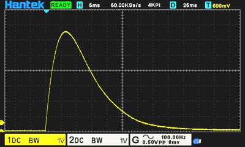
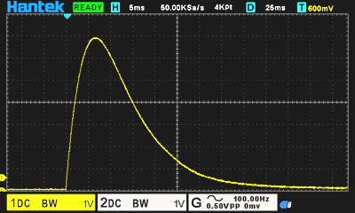

Импульсный двухкатушечный
индуктор в конфигурации системы катушек
Гельмгольца с двухкоординатным доступом в зону однородного магнитного поля
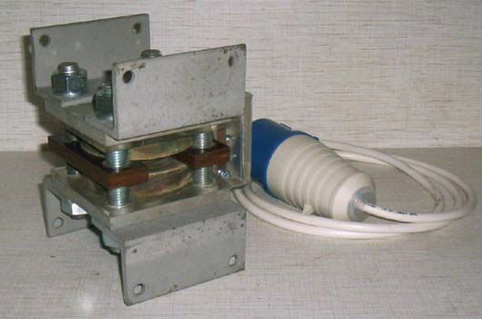
1. Введение
Катушки Гельмгольца [14] используются для получения практически однородного магнитного поля [9] в некотором объеме пространства - рабочей зоне. В идеальном случае они представляют собой два одинаковых соосно расположенных кольцевых витка, соединенных между собой последовательно и находящихся на расстоянии радиуса витка друг от друга. Обычно катушки Гельмгольца состоят из двух одинаковых соосных катушек, на которых намотано некоторое количество витков, причем толщина катушки должна быть много меньше ее радиуса. В реальных системах толщина катушек может быть сравнима с их радиусом. Таким образом, можно считать системой колец или катушек Гельмгольца две соосно расположенных одинаковых катушки, расстояние между центрами которых приблизительно равно их среднему радиусу. В центре системы имеется зона однородного магнитного поля, что может быть использовано для измерительных целей, для калибровки датчиков магнитной индукции и т. д.
При работе системы катушек Гельмгольца в импульсном режиме при достаточно больших токах возможно использование ферромагнитных (стальных) деталей (магнитопровода) для повышения прочности конструкции и улучшения ее характеристик.
2. Назначение
Импульсный двухкатушечный индуктор в конфигурации системы катушек Гельмгольца с двухкоординатным доступом в рабочую область предназначен для получения импульсного магнитного поля с зоной однородности и может быть использован для калибровки датчиков магнитной индукции [12], изучения магнитных свойств веществ, намагничивания и размагничивания постоянных магнитов [15] различных марок и составов [10]. При использовании достаточно мощных емкостных накопителей энергии [7] позволяет получать импульсные магнитные поля, которые можно отнести к сильным [16].
3. Расчет импульсного двухкатушечного индуктора
Расчет импульсного индуктора, состоящего из катушек Гельмгольца и стягивающего их стального магнитопровода (конструкция показана на рис. 5.1), производился с помощью программ Helmholtz Coils [2], UNI [4], а также методом конечных элементов [13] с помощью программы Ansoft Maxwell [1] в представлении трехмерной модели. Расчеты сделаны для случая генерации сильного импульсного магнитного поля с амплитудой индукции порядка 7 Тл. Результат расчета параметров катушек импульсного индуктора с помощью программы H_Coils (Helmholtz Coils) показан на рис. 3.1, а параметров импульса тока для системы катушек Гельмгольца без магнитопровода - на рис. 3.2. Каждая из катушек системы состоит из примерно 170 витков медного провода диаметром 1.2 мм. Расчетное активное сопротивление системы катушек при последовательном включении 0.819 Ом, индуктивность без учета влияния магнитопровода - 3.225 мГн. Индукция магнитного поля в центре системы катушек (без учета влияния магнитопровода) составляет 7.516 Тл при амплитуде импульса тока 1288 А (емкостной накопитель энергии 16 кДж 1800 В). Таким образом, рассматриваемая система катушек Гельмгольца обеспечивает получение в рабочей зоне сильных магнитных полей с амплитудой индукции, превышающей 5 Тл. Добавление магнитопровода приведет к некоторому увеличению индуктивности, уменьшению амплитуды импульса тока, увеличению его длительности, а также повышению амплитуды индукции магнитного поля в рабочей зоне и, возможно, улучшению его однородности.
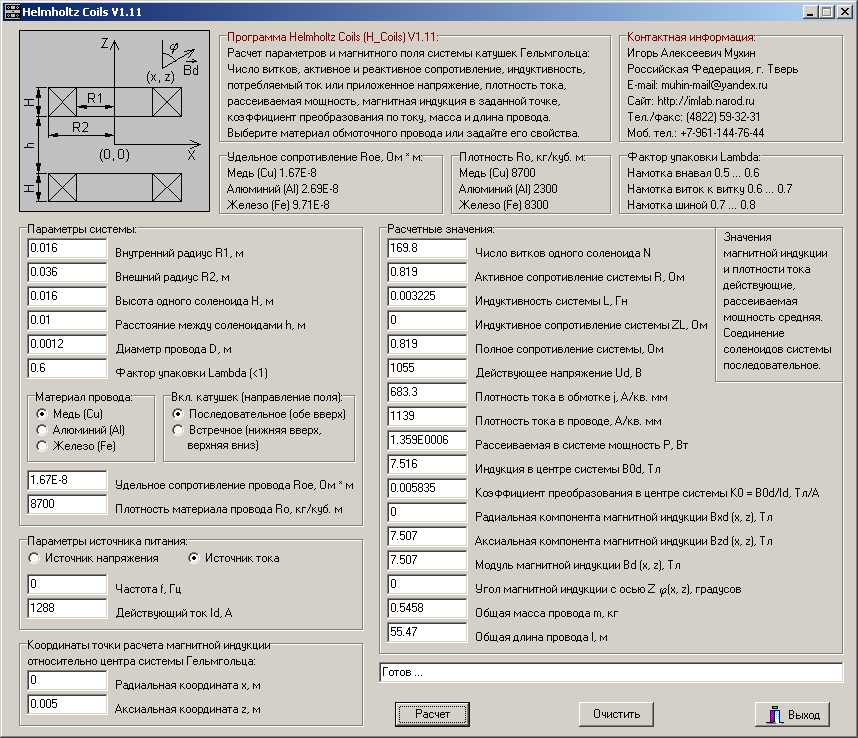
Рис. 3.1. Расчет системы катушек Гельмгольца импульсного индуктора без учета влияния магнитопровода с помощью программы Helmholtz Coils (H_Coils) для импульса тока амплитудой 1288 А (емкостной накопитель 16 кДж 1800 В).
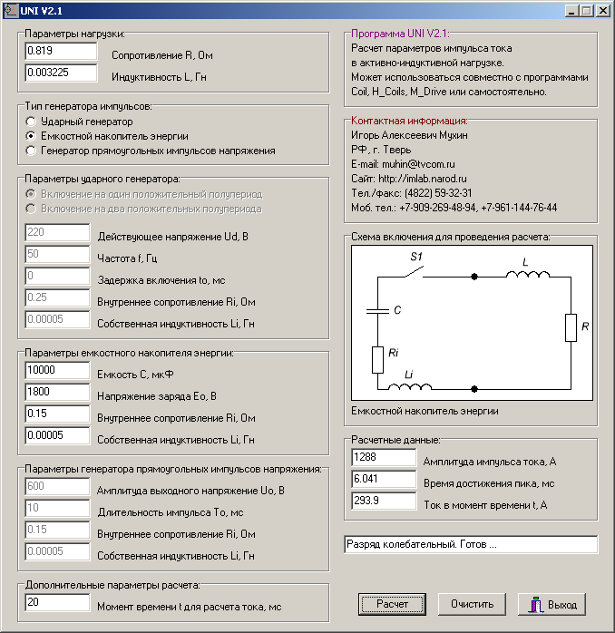
Рис. 3.2. Расчет параметров импульса тока через катушки Гельмгольца импульсного индуктора (без учета влияния магнитопровода) с помощью программы UNI: емкостной накопитель 16 кДж 1800 В, амплитуда импульса тока 1288 А.
В таблице 3.1 приведен расчет магнитной индукции в центре и на краях рабочей зоны (цилиндр диаметром 10 мм высотой 10 мм в центре системы). Неоднородность магнитного поля системы катушек (без магнитопровода) в рабочей зоне не превышает 0.5 %.
Таблица 3.1. Магнитная индукция в рабочей зоне системы катушек Гельмгольца (без магнитопровода).
|
z, мм |
Магнитная индукция (x = 0 мм), Тл |
Магнитная индукция (x = 5 мм), Тл |
|
0 |
7.516 |
7.509 |
|
5 |
7.507 |
7.538 |
На рис. 3.3 показан вид расчетной трехмерной модели импульсного двухкатушечного индуктора (с магнитопроводом) в программе Ansoft Maxwell [1]. Магнитодвижущая сила (МДС) каждой катушки, принимаемая для расчета индуктивности индуктора (с учетом магнитопровода), а также индукции магнитного поля, определяется амплитудой импульса тока через катушку (соединение катушек последовательное), которая, в свою очередь, рассчитывается с помощью программы UNI [4]. Индуктивность системы катушек при добавлении магнитопровода изменяется незначительно (с 3.225 до 3.6332 мГн), так как ток возбуждения достаточно большой. Соответственно, амплитуда импульса тока уменьшается также несильно (с 1288 А примерно до 1259 А). Для катушки, содержащей 170 витков, при амплитуде импульса тока 1259 А МДС для расчета принята равной 210000 А ∙ витков.
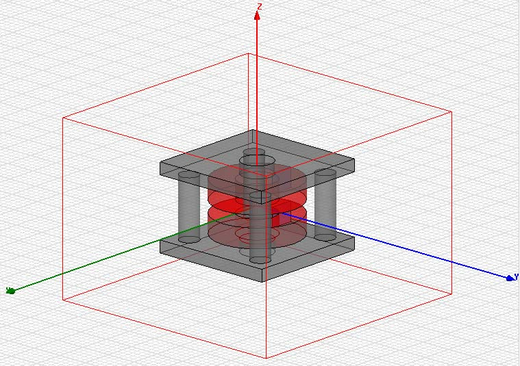
Рис. 3.3. Расчетная трехмерная модель импульсного двухкатушечного индуктора в программе Ansoft Maxwell. Стальные детали магнитопровода показаны серым цветом. Катушки - красным. Шаг сетки 5 мм.
Результаты расчета амплитуды магнитной индукции в рабочей зоне импульсного двухкатушечного индуктора (с магнитопроводом) для заданной амплитуды импульса тока 1259 А (МДС каждой катушки 210000 А ∙ витков) приведены на рис. 3.4 и в таблице 3.2. Неоднородность магнитного поля в рабочей зоне импульсного индуктора (с магнитопроводом) не превышает 0.5 %.
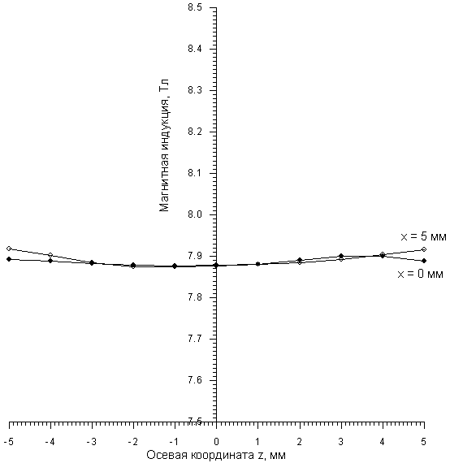
Рис. 3.4. Распределение магнитной индукции в рабочей зоне импульсного двухкатушечного индуктора (амплитудное значение, емкостной накопитель 16 кДж 1800 В, амплитуда тока 1259 А, МДС каждой катушки 210000 А ∙ витков) вдоль оси и на расстоянии 5 мм от оси.
Таблица 3.2. Магнитная индукция в рабочей зоне импульсного двухкатушечного индуктора (с магнитопроводом).
|
Осевая координата z, мм |
Магнитная индукция (x = 0 мм), Тл |
Магнитная индукция (x = 5 мм), Тл |
|
-5 |
7.891375 |
7.917165 |
|
-4 |
7.888716 |
7.900978 |
|
-3 |
7.882885 |
7.884036 |
|
-2 |
7.878128 |
7.873785 |
|
-1 |
7.877049 |
7.874747 |
|
0 |
7.877789 |
7.876671 |
|
1 |
7.880345 |
7.87956 |
|
2 |
7.889576 |
7.883411 |
|
3 |
7.898931 |
7.891294 |
|
4 |
7.898863 |
7.904455 |
|
5 |
7.887496 |
7.915668 |
4. Тепловой расчет
Расчет параметров импульса тока при подключении импульсного двухкатушечного индуктора к емкостному накопителю 16 кДж 1800 В с учетом наличия магнитопровода при индуктивности индуктора, равной 3.6332 мГн, показан на рис. 4.1.
Рис. 4.1. Расчет параметров импульса тока через катушки импульсного двухкатушечного индуктора с магнитопроводом с помощью программы UNI: емкостной накопитель 16 кДж 1800 В, амплитуда импульса тока 1259 А.
Перегрев обмоток индуктора за один импульс тока выполнен с помощью программы dTWire [3]. Форма импульса предполагается синусоидальной. Длительность импульса предполагается равной 25 мс, т. к. в соответствии с рис. 4.1 в момент времени, равный 25 мс от начала импульса, величина тока существенно падает (до 112.8 А). Амплитуда импульса тока равна 1259 А, что несколько меньше, чем для индуктора без учета влияния магнитопровода (1288 А). Результаты расчета представлены на рис. 4.2. Перегрев не превышает 77 0C за один импульс. Таким образом, если начальная температура обмоток импульсного индуктора примерно равна комнатной (или ниже ее), то вполне возможна генерация однократного импульса тока при совместной работе индуктора с емкостным накопителем 16 кДж 1800 В (и, соответственно, импульса магнитного поля с амплитудой индукции порядка 7 Тл в рабочей зоне) с последующим охлаждением обмоток индуктора вновь до уровня комнатной температуры.
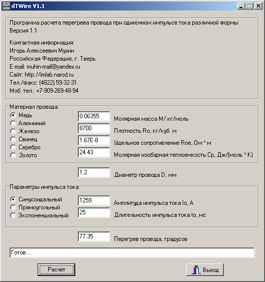
Рис. 4.2. Расчет перегрева обмоток индуктора при подаче синусоидального импульса тока амплитудой 1259 А длительностью 25 мс (емкостной накопитель 16 кДж 1800 В).
5. Конструкция импульсного двухкатушечного индуктора
Эскиз импульсного двухкатушечного индуктора показан на рис. 5.1. По сути индуктор представляет из себя импульсный электромагнит, так как содержит катушки индуктивности и магнитопровод как элемент магнитной цепи. Цилиндрические катушки индуктора, намотанные на оправке диаметром 32 мм с отверстием диаметром 22 мм и разделенные немагнитной вставкой толщиной 10 мм, зажаты с помощью четырех стальных шпилек М16 между двумя стальными плитами толщиной 10 мм, в каждой из которых имеется круглое проходное отверстие диаметром 21 мм. Таким образом, в центр индуктора имеется осевой и боковой доступ. Выводы катушек подсоединяются к клеммной колодке и соединяются последовательно. Туда же присоединяется питающий кабель с заземлением. Сверху клеммная колодка закрывается защитной крышкой.
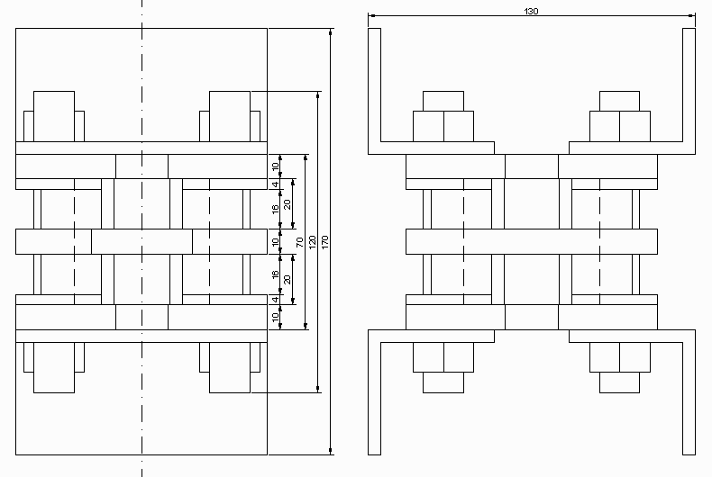
Рис. 5.1. Эскиз импульсного двухкатушечного индуктора.
Внешний вид импульсного двухкатушечного индуктора показан на рис. 5.2.
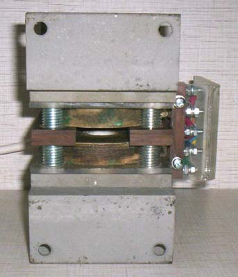 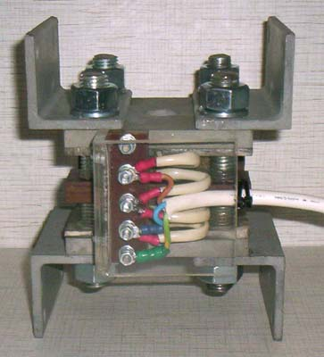
Рис. 5.2. Внешний вид импульсного двухкатушечного индуктора.
6. Технические данные импульсного двухкатушечного индуктора:
7. Испытания импульсного двухкатушечного индуктора
Активное сопротивление индуктора с подключающим кабелем измерено мультиметром APPA-107N и составляет 1.02 Ом, хорошо согласуясь с рассчитанным значением 0.819 Ом в сумме с дополнительным сопротивлением элементов подключения к конденсаторной батарее 0.15 Ом и кабеля. Индуктивность индуктора с кабелем подключения 4.55 мГн измерена прибором VC62430 на частоте 1000 Гц, также вполне соответствуя рассчитанному значению 3.6332 мГн с учетом того, что измерения индуктивности проводились на малых токах и на довольно высокой частоте.
Контроль формы и амплитуды импульса магнитной индукции в рабочей зоне индуктора выполнен с помощью импульсного тесламетра [12] с датчиком Холла типа ПХЭ [8] и осциллографа UTD2102CEL-R или DSO2D15. Сигнал на осциллограф подавался с выхода тесламетра с коэффициентом преобразования 1 В/Тл. Схема измерений показана на рис. 7.1. В качестве генератора импульсов тока использовались различные емкостные накопители энергии [7].
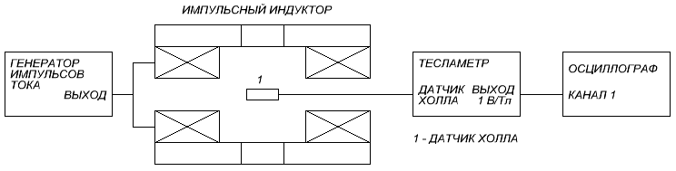
Рис. 7.1. Схема измерения формы и параметров импульса магнитной индукции в центре рабочей зоны индуктора.
Форма импульса магнитной индукции в рабочей зоне индуктора при работе с емкостным накопителем энергии 1 кДж 500 В показана на рис. 7.2. Амплитуда магнитной индукции достигает 2.3 Тл. Длительность импульса на уровне половины амплитуды примерно 20 мс, общая длительность импульса не превышает 40 мс.
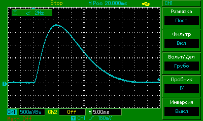
Рис. 7.2. Форма импульса магнитной индукции в центре рабочей зоны индуктора при подключении к емкостному накопителю энергии 1 кДж 500 В (уровень заряда 100 %): цена деления по вертикали 500 мТл/дел., цена деления по горизонтали 5 мс/дел. Амплитуда магнитной индукции 2.3 Тл.
На рис. 7.3 показана форма импульса магнитной индукции в рабочей зоне индуктора при работе с емкостным накопителем энергии 1 кДж 900 В. Амплитуда магнитной индукции достигает 2.7 Тл. Длительность импульса на уровне половины амплитуды примерно 10 мс, общая длительность импульса не превышает 30 ... 35 мс.
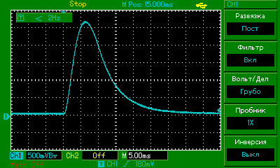
Рис. 7.3. Форма импульса магнитной индукции в центре рабочей зоны индуктора при подключении к емкостному накопителю энергии 1 кДж 900 В (уровень заряда 100 %): цена деления по вертикали 500 мТл/дел., цена деления по горизонтали 5 мс/дел. Амплитуда магнитной индукции 2.7 Тл.
При подключении индуктора к емкостному накопителю 2 кДж 900 В в рабочей зоне получается импульс магнитной индукции с формой, показанной на рис. 7.4. Амплитуда магнитной индукции достигает 3.4 Тл. Длительность импульса на уровне половины амплитуды примерно 12 мс, общая длительность импульса не превышает 35 мс.
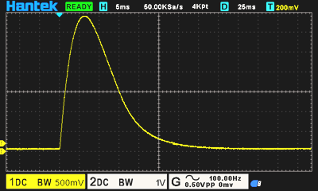
Рис. 7.4. Форма импульса магнитной индукции в центре рабочей зоны индуктора при подключении к емкостному накопителю энергии 2 кДж 900 В (уровень заряда 100 %): цена деления по вертикали 500 мТл/дел., цена деления по горизонтали 5 мс/дел. Амплитуда магнитной индукции 3.4 Тл.
На рис. 7.5 изображены формы импульсов магнитной индукции в рабочей зоне индуктора при его подключении к емкостному накопителю энергии 16 кДж 1800 В, заряжаемому до разных уровней заряда. Амплитуда магнитной индукции в рабочей зоне достигает 7.1 Тл при 100 % заряде накопителя. Длительность импульса на уровне половины амплитуды примерно 16 мс, общая длительность импульса не превышает 45 ... 50 мс. Максимальная амплитуда магнитной индукции примерно на 10 % ниже расчетного значения, что может объясняться несколько более высоким активным сопротивлением разрядной цепи как за счет самих обмоток (более высокое по сравнению с расчетным удельное электрическое сопротивление обмоточного провода), так и за счет сопротивления соединительного кабеля и внутреннего сопротивления емкостного накопителя.
 
Рис. 7.5. Форма импульса магнитной индукции в центре рабочей зоны индуктора при подключении к емкостному накопителю энергии 16 кДж 1800 В при уровнях заряда 90, 95 и 100 % (слева направо): цена деления по вертикали 1 Тл/дел., цена деления по горизонтали 5 мс/дел. Амплитуда магнитной индукции 6.6, 6.8 и 7.1 Тл, соответственно.
Распределение температуры на поверхности импульсного двухкатушечного индуктора контролировалось с помощью инфракрасного тепловизора Mileseey TR120E. На рис. 7.6 показано распределение температуры на поверхности индуктора после однократного импульса тока от емкостного накопителя 16 кДж 1800 В при разных уровнях заряда. Перегрев обмоток при однократном импульсе тока (максимум 50 0C при 100 % заряде емкостного накопителя) не превышает расчетный и не создает угрозы аварийной ситуации.
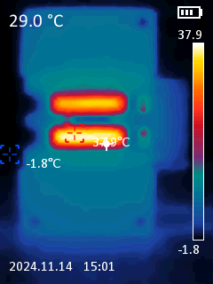 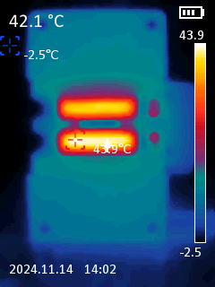 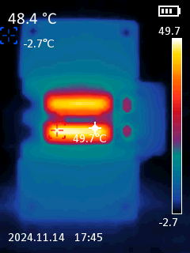
Рис. 7.6. Распределение температуры на поверхности индуктора после однократного импульса тока при подключении к емкостному накопителю энергии 16 кДж 1800 В (уровни заряда слева направо 90, 95 и 100 %): максимальная температура на поверхности катушек примерно 50 0C при 100 % заряде емкостного накопителя и начальной температуре около 0 0C.
Внешний вид установки для генерации импульсных магнитных полей в составе импульсного двухкатушечного индуктора с двумя емкостными накопителями 2 кДж 900 В и 16 кДж 1800 В показан на рис. 7.7.
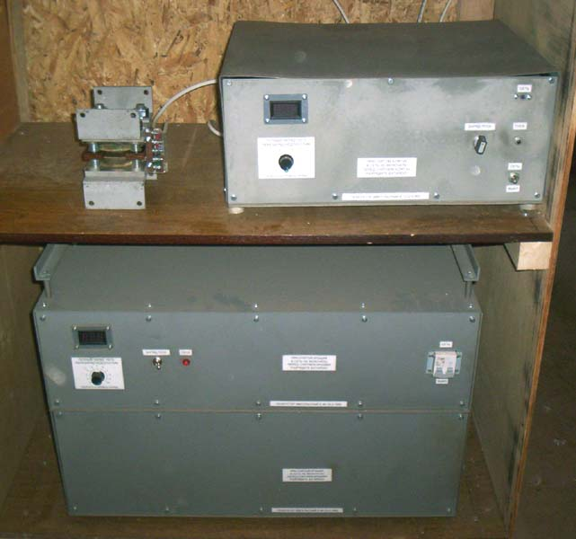
Рис. 7.7. Импульсный двухкатушечный индуктор в комплекте с емкостными накопителями 2 кДж 900 В (сверху) и 16 кДж 1800 В (снизу).
8. Заключение
Проведенные испытания подтверждают расчетные характеристики двухкатушечного импульсного индуктора в конфигурации катушек Гельмгольца с двухкоординатным доступом в рабочую зону с однородным магнитным полем. В частности, индуктор может использоваться для генерации сильных импульсных магнитных полей с амплитудой индукции более 5 Тл. Для совместной работы с индуктором могут использоваться генераторы мощных импульсов тока [5 - 7] различных конструкций и принципа действия. Перегрев обмоток индуктора при однократном импульсе тока при использовании мощных емкостных накопителей (до 16 кДж 1800 В) не превышает допустимых значений, соответствующих расчетным.
Желающие получить консультацию, помощь в проведении расчетов или приобрести продукцию могут обращаться к автору (см. раздел Контактная информация ).
Ссылки:
14.11.2024
Альтернативные источники
энергии
Компьютеры и
Интернет
Магнитные поля
Механотронные системы
Перспективные
разработки
Электроника и
технология